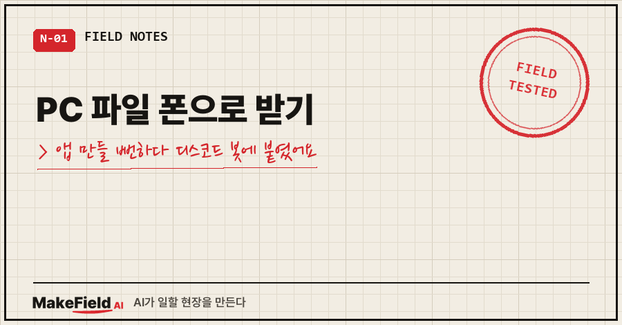
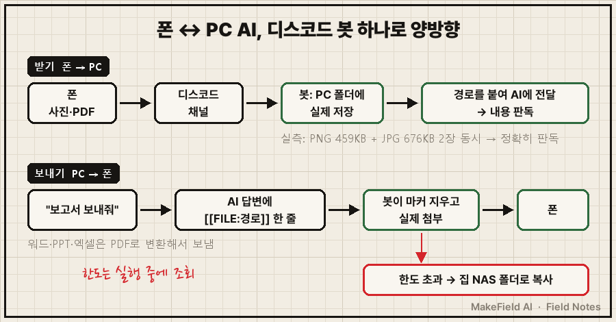
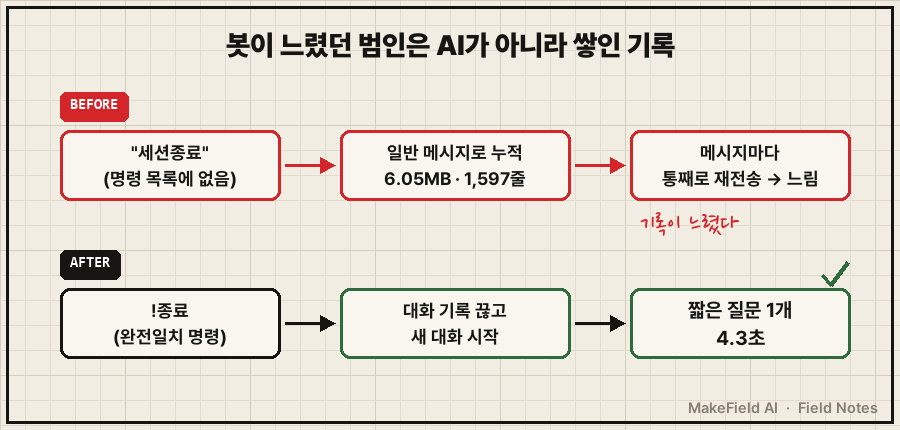
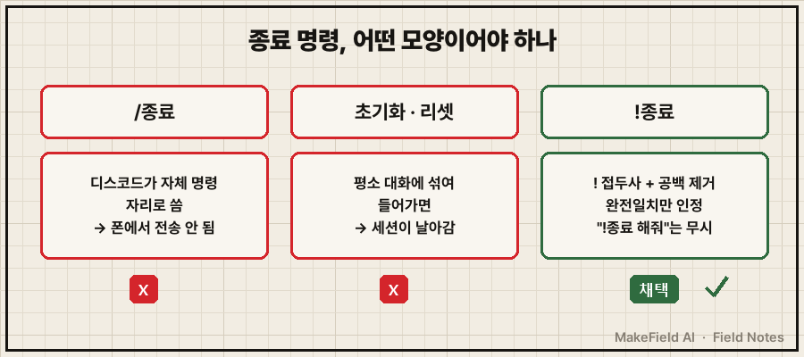

폰에서 PC의 AI한테 사진을 주고, PC에 있는 보고서를 폰으로 받고 싶었어요. 처음엔 "윈도우·맥·아이폰·안드로이드 다 되는 앱을 하나 만들까"까지 갔습니다.
결론부터 말하면 새 앱은 0줄이었어요. 이미 돌던 디스코드 봇이 첨부파일을 아예 안 읽고 있던 빈칸을 메운 게 전부입니다. PC 파일 폰으로 받기, 폰 사진 PC AI에 넘기기 둘 다 그 봇 하나로 끝났어요.
저는 제조 현장에서 15년째 자동화 일을 하는 엔지니어고, 퇴근 후엔 개인 PC에 AI 비서를 키우고 있어요. 터미널에서 돌아가는 AI라서 화면 캡처 하나 붙이는 것도 은근히 불편하거든요. PC 앞에서는 단축키로 해결했는데(이전 글의 Alt+V 이야기), 밖에서 폰으로 붙는 순간 그마저도 막혔습니다.
1. 왜 폰에서는 파일을 못 줄까요
드래그, @, Ctrl+V는 전부 '이 파일 여기 있어'라는 경로 전달이에요. 그래서 파일이 그 PC 안에 실제로 있어야 합니다.
폰이나 맥북에서 원격으로 붙어 있을 때는 그 파일이 PC에 없어요. 클립보드에 담겨 있어도 PC 입장에선 실체가 없는 거죠.
그러니 필요한 건 화려한 앱이 아니라 파일을 PC로 실제로 내려받아 주는 통로 하나였어요.
사실 앱을 만들려는 욕구가 처음이 아니었어요. 올해 4월에 폰에서 PC AI를 쓰려고 웹 터미널을 직접 만들어 본 적이 있었거든요.
ttyd 띄우고
포트포워딩 열고
Tailscale 붙이고
Cloudflare 터널 바꾸고
Node로 직접 짜고..
방식 다섯 개가 전부 아이폰에서 깨졌어요. WebSocket 차단, 자체서명 인증서 불신, 입력창 포커스, 화면 렌더링 붕괴까지. 기록이 없었으면 같은 길을 또 갔을 겁니다.
| 후보 | 결과 |
|---|---|
| 크로스플랫폼 앱 새로 개발 | 착수 전 중단 — 4월 웹 터미널 5종 실패 이력과 같은 길 |
| 자작 웹 터미널 (4월) | 5종 모두 아이폰에서 깨짐 |
| 이미 쓰던 디스코드 봇 | 폰·맥북 어디서든 앱 설치 끝, 파일 첨부도 원래 됨 → 채택 |
여러분도 새로 만들고 싶어질 때, 지금 돌고 있는 도구부터 한번 열어보시나요?
2. 디스코드 봇이 사진을 조용히 버리고 있었어요
봇 코드를 열어 보니 메시지를 받는 함수가 글자만 읽고 message.attachments는 아예 안 보고 있었어요. 사진만 보내면 에러도 없이 그냥 무시됐던 거예요.
그래서 받은 첨부를 날짜별 폴더에 저장하고, 그 경로를 AI 질문에 붙여 넘기게 바꿨습니다.
for i, att in enumerate(message.attachments[:MAX_ATTACHMENTS], 1): # 메시지당 10개
path = os.path.join(folder, f"{stamp}_{i:02d}_{safe}{ext.lower()}")
await att.save(path) # PC에 실제로 내려받기
saved.append(path)
# 이후 프롬프트 끝에 "[첨부 N개 — 아래 경로에 저장돼 있다]" + 경로 목록을 붙여 claude -p에 전달실측으로 PNG 459KB, JPG 676KB 두 장을 한 번에 보냈더니 저장 → AI 기동 → 내용 판독까지 정확히 됐어요.

3. PC 파일 폰으로 받기는 마커 한 줄로 했어요
반대 방향은 이렇게 풀었어요. 폰에서 "그 보고서 보내줘"라고 하면 AI가 파일을 찾아서 답변 안에 마커 한 줄을 넣어요. 봇이 그 줄을 떼어 내고 진짜 파일로 첨부합니다.
[[FILE:C:\...\보고서.docx]] ← AI가 답변에 넣는 줄 (봇이 지우고 실제 첨부)
!파일 <경로> ← 제가 직접 지정할 때 (여러 개는 | 로 구분)겪어 보고 넣은 장치가 세 개예요.
- 워드·파워포인트·엑셀은 PDF로 바꿔서 보내요. 폰에서 원본은 서식이 깨지기 쉬워서요.
- 업로드 한도는 검색하지 않고 실행 중에 물어봐요. 웹에선 10MB, 20MB, 25MB로 말이 제각각이었거든요. discord.py의
guild.filesize_limit값을 그때그때 읽고, 못 읽을 때만 보수적으로 8MB를 씁니다. - 한도를 넘으면 집 NAS 폴더로 복사하고 "NAS로 보냈다"고 알려 줘요. NAS가 꺼져 있으면 클라우드 폴더로 한 번 더 넘깁니다.
4. 봇이 느려진 진짜 이유는 따로 있었어요
고치는 김에 "요즘 봇 답이 왜 이렇게 느리지"도 봤어요. 범인은 AI가 아니었습니다.
제가 그동안 대화를 끝낼 때마다 "세션종료"라고 쳤는데, 그 말이 종료 명령 목록에 없었어요. 그냥 일반 메시지로 계속 쌓인 거죠. 대화 기록이 6.05MB, 1,597줄까지 자랐고 메시지마다 그걸 통째로 다시 보내고 있었어요.
새 대화에 짧은 질문 하나를 던지니 4.3초. AI가 느린 게 아니라 쌓인 기록이 느렸던 거였어요.

종료 명령은 이렇게 다시 짰어요.
RESET_TRIGGERS = {"!종료", "!세션종료", "!초기화", "!리셋", "!new", "!reset"}
if text.lower().replace(" ", "") in RESET_TRIGGERS: # 공백 빼고 완전일치만
reset_session()/로 시작하면 디스코드가 자체 명령어 자리로 써서 제 폰에선 전송이 안 됐어요. 그렇다고 '초기화', '리셋' 같은 맨 단어로 두면 평소 대화에 섞여 들어가 세션이 날아갈 수 있고요. 그래서 !를 붙이고, "!종료 해줘"처럼 문장 속에 섞인 건 안 걸리게 완전일치로만 판정합니다.

5. 제가 틀린 것도 하나 적어 둘게요
이날 저는 AI한테 "먼저 같이 토의하자"고 해 놓고 시작했는데, AI가 평소 규칙대로 돌고 있던 봇을 바로 고치고 재시작해 버렸어요. 결과는 잘 나왔지만 순서가 틀렸죠.
그 뒤로 규칙을 하나 바꿨습니다. 사용자가 그 자리에서 한 말이 기본 규칙보다 우선이고, 돌고 있는 시스템은 승인 받고 나서 고친다.
자주 묻는 질문
Q. 디스코드 봇 말고 다른 메신저로도 되나요?
원리는 같아요. 첨부를 PC에 내려받는 함수, 경로를 AI에 넘기는 한 줄, 답변 속 마커를 첨부로 바꾸는 처리. 저는 이미 디스코드 봇이 돌고 있어서 거기에 붙였을 뿐이에요.
Q. 첨부를 받은 폴더는 계속 쌓이지 않나요?
쌓여요. 제 경우 그 폴더가 NAS 동기화 범위 안이라, 처리 끝난 파일은 비우는 걸 남은 할 일로 적어 뒀습니다.
한 장으로 정리하면 이래요.
| 하고 싶은 것 | 방법 |
|---|---|
| 폰 사진·PDF를 PC AI에 주기 | 디스코드 채널에 그냥 올리기 → 봇이 PC에 저장 후 경로 전달 |
| PC 파일 폰으로 받기 | "○○ 보내줘" → AI가 FILE 마커 → 봇이 첨부(오피스는 PDF) |
| 큰 파일 | 실행 중 한도 조회 → 넘으면 NAS 폴더로 |
| 봇이 느릴 때 | !종료로 대화 기록 끊기 |
새로 만들고 싶어질 때가 사실 기존 도구의 빈칸을 찾기 제일 좋은 때더라고요.
이 봇처럼 쓰다 막혀서 고친 개인 자동화들은 makefield.ai에 차곡차곡 정리해 두고 있어요.
출처
- 봇 코드·실측 수치: 개인 작업 기록(2026-09-22) 및 봇 소스 코드 직접 확인(2026-10-10)
- 업로드 한도 조회: discord.py 공식 API 문서
Guild.filesize_limit항목(서버에 올릴 수 있는 최대 파일 크기, 바이트 단위)
태그: #PC파일폰으로받기 #디스코드봇 #디스코드봇파일전송 #디스코드첨부파일 #discordpy #클로드코드 #클로드코드원격 #AI파일전송 #폰에서AI쓰기 #개인AI비서 #업무자동화 #파이썬자동화 #자동화만들기 #AI자동화 #MakeFieldAI